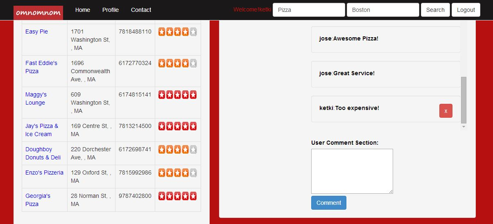
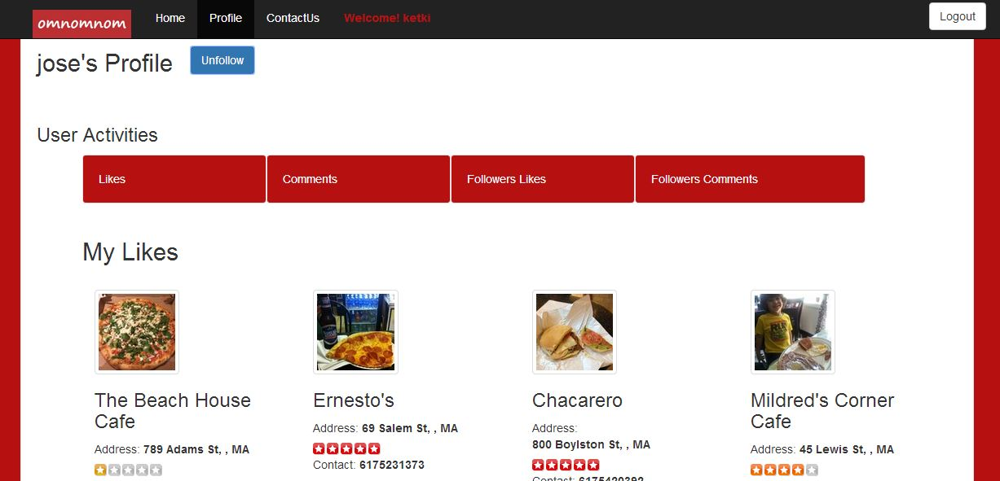
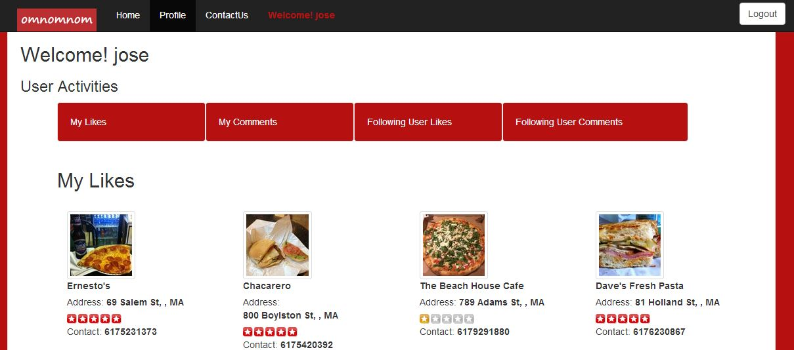
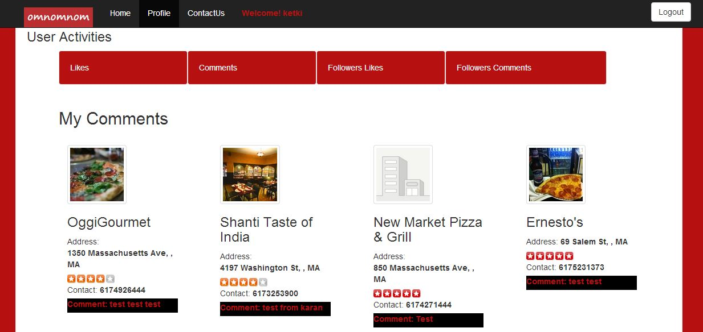

Interesting Functionalities - Like, Comment, Follow, Responsive Design
Some of the Functionalities Implemented are mentioned below:
Like
- Only Logged in Users can "Like" Food Outlets, by clicking on the LIKE button.
- An outlet Liked can by "Unliked", by clicking on the Unlike button.
- When the user visits the same outlet again, the button appears as "Like" or "Unlike",depending on whether the user has liked it or not.
- The Likes of a User, also appear on the User's Profile Page.
Comment
- Only Logged in Users can "Comment" on Food Outlets, by entering a Comment.
- When the user visits the same outlet again, the previous comments as well as new comments appears on that particular outlet
- Comments of other users are also visible to everybody.
- The logged in User can only delete his/her own comments only.
- The Comments of a User, also appear on the User's Profile Page.
Follow
- Only Logged in Users can "Follow" other users by searching for them in the Explore User Category.
- Follow or Unfollow buttons appear, depending whether the user is followed or not.
- When the user visits another User's Profile again, the Follow or Unfollow button appears.
- If User "A" has followed User "B". The comments and likes of the followed User B appears on the profile of Following User A.
- If any comment is deleted, or any outlet is liked/unliked, it immediately reflects on the User Profile.
Responsive Design
- My entire Website is responsive and mobile phone and tablet compatible.
The snap shot of the Like functionality is displayed below.




